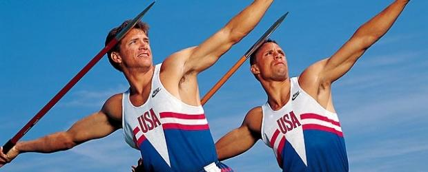

<DOCTYPE HTML>
<link rel="stylesheet" href="indexstyle.css">
<h1>
1992
</h1>
 
<h2>
Spain
</h2>
  
Unified German team
Many new countries previously under the USSR formed a unified team (and won); others competed as individuals
No boycotts whatsoever, marking the end to tensions of the cold war
  
  


  
</HTML>
